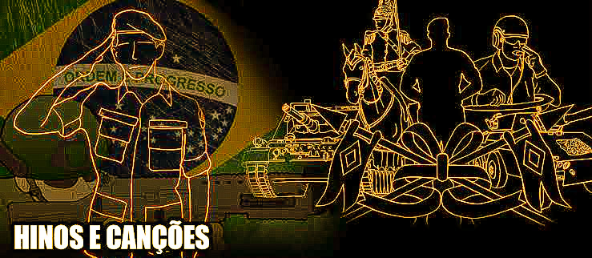

Tabela de conteúdo
Hinos e Canções
❝ Eles querem que a gente cante hino, mas a única coisa que eu ouço é a liberdade chamando lá fora.
Aqui está uma lista completa de canções e hinos para decorar antes ou durante ou depois do seu ano de recruta.
Canal: https://youtube.com/@bandamilitarbatalhao
A composição foi escrita em 1942 por Teófilo de Barros Filho, para inspirar o patriotismo brasileiro após os sucessivos ataques da Alemanha Nazista a embarcações civis do Brasil, o que resultou na entrada do Brasil na Segunda Guerra Mundial.
Letra:
Se a Pátria querida
For envolvida pelo inimigo
Na paz ou na guerra
Defende a terra contra o perigo
Com ânimo forte, se for preciso
Enfrenta a morte
Afronta se lava com fibra de herói
De gente brava
Bandeira do Brasil
Ninguém te manchará
Teu povo varonil
Isso não consentirá
Bandeira idolatrada
Altiva a tremular
Onde a liberdade é mais uma estrela a brilhar
Bandeira do Brasil
Ninguém te manchará
Teu povo varonil
Isso não consentirá
Bandeira idolatrada
Altiva a tremular
Onde a liberdade é mais uma estrela a brilhar
Se a Pátria querida
For envolvida pelo inimigo
Na paz ou na guerra
Defende a terra contra o perigo
Com ânimo forte, se for preciso
Enfrenta a morte
Afronta se lava com fibra de herói
De gente brava
Bandeira do Brasil
Ninguém te manchará
Teu povo varonil
Isso não consentirá
Bandeira idolatrada
Altiva a tremular
Onde a liberdade é mais uma estrela a brilhar
Bandeira do Brasil
Ninguém te manchará
Teu povo varonil
Isso não consentirá
Bandeira idolatrada
Altiva a tremular
Onde a liberdade é mais uma estrela a brilhar
Versão original cantada por Sílvio Caldas:
A música tem autoria de Teófilo Dolor Monteiro de Magalhães (1885 – 1968) Músico paraense. Compositor, pianista e flautista.
LETRA: Ten Cel ALBERTO AUGUSTO MARTINS (1894 - 1971) Tenente-Coronel do Serviço de Intendência do Exército. Obra originalmente intitulada “Canção do Soldado”, até ser adotada oficialmente pelo Exército Brasileiro com o título de “Canção do Exército”, conforme a Portaria Ministerial nº 88, de 20 de janeiro de 1976. Sua melodia é baseada totalmente no Dobrado “Capitão Cassulo”, composição de 1911, autoria do músico Teófilo Dolor Monteiro de Magalhães. Sua letra composta pelo poema do Ten Cel Alberto Augusto Martins, redigido em 1916.
Letra:
Nós somos da Pátria a guarda,
Fiéis soldados,
Por ela amados.
Nas cores de nossa farda
Rebrilha a glória,
Fulge a vitória.
Em nosso valor se encerra
Toda a esperança
Que um povo alcança.
Quando altiva for a Terra
Rebrilha a glória,
Fulge a vitória.
A paz queremos com fervor,
A guerra só nos causa dor.
Porém, se a Pátria amada
For um dia ultrajada
Lutaremos sem temor.
Como é sublime
Saber amar,
Com a alma adorar
A terra onde se nasce!
Amor febril
Pelo Brasil
No coração
Nosso que passe.
E quando a nação querida,
Frente ao inimigo,
Correr perigo,
Se dermos por ela a vida
Rebrilha a glória,
Fulge a vitória.
Assim ao Brasil faremos
Oferta igual
De amor filial.
E a ti, Pátria, salvaremos!
Rebrilha a glória,
Fulge a vitória.
A paz queremos com fervor,
A guerra só nos causa dor.
Porém, se a Pátria amada
For um dia ultrajada
Lutaremos sem temor.
A paz queremos com fervor,
A guerra só nos causa dor.
Porém, se a Pátria amada
For um dia ultrajada
Lutaremos sem temor.
A Canção da Base Administrativa da Guarnição de Santa Maria.
Letra de Cap IVAN DE FREITAS VASCONCELOS JUNIOR e música pelo 1º Ten JOSÉ PINHO DE OLIVEIRA e
2º Sgt FABIANO RIBEIRO DOS SANTOS.
Letra:
Ⅰ
Sopram ventos de mudança no horizonte
No coração do Rio Grande
Em plena Divisão Encouraçada
Surgiu nossa Base amada
E seguindo o exemplo de Caxias
Lhe entregamos nosso melhor
Apoiamos os irmãos de Armas
E também nossas tropas blindadas
Ⅱ
Nós somos a colmeia do trabalho
E cumpriremos nossa missão
Faremos o que for preciso
Com garbo e dedicação
Orgulhosos e unidos trabalhamos
Em prol de nossa bandeira
A labuta será recompensada
Nossas façanhas eternizadas
Ⅲ
Saudemos nossa Base
Somemos força à Guarnição
Marchemos confiantes
Nosso futuro será brilhante!